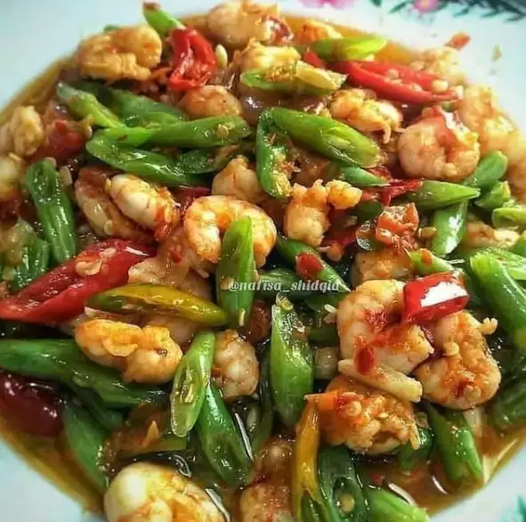

1. Tumis buncis udang.

foto: Instagram/@resep_masakrumahan
Bahan:
- ‑ 100 gr udang loreng, kupas dan bersihkan
- ‑ 100 gr baby buncis, iris serong
- ‑ Garam
- ‑ Gula
- ‑ Penyedap rasa
- ‑ 1 buah cabai merah besar, iris serong
- ‑ 1 buah cabai hijau besar, iris serong
Bumbu halus:
- ‑ Cabai rawit
- ‑ Cabai keriting sesuai selera
- ‑ 2 siung bawang putih
- ‑ 4 butir bawang merah
Cara membuat:
- Tumis bumbu halus, beri air sedikit dan masak sampai harum.
- Masukkan buncis dan irisan cabai hijau, lalu tambahkan gula, garam, dan penyedap, aduk rata.
- Terakhir masukkan udang, masak sampai udang berubah warna dan matang. Angkat dan sajikan.